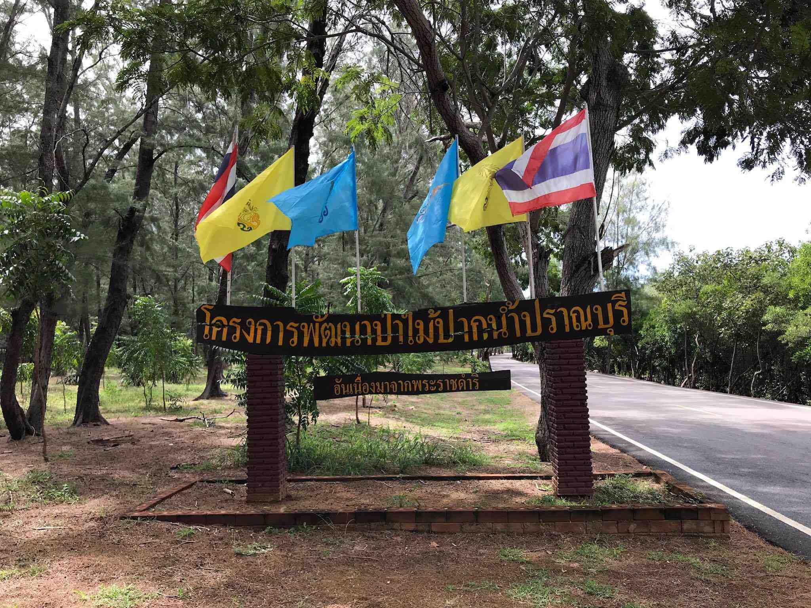

ตั้งอยู่บริเวณตำบลปากน้ำปราณ อำเภอปราณบุรี จังหวัดประจวบคีรีขันธ์ ภายในเขตป่าสงวนแห่งชาติ ป่าคลองเก่า และป่าคลองคอย เพื่อเป็นแหล่งศึกษาเรียนรู้ระบบนิเวศป่าไม้ และเป็นหนึ่งในโครงการพระราชดำริ เพื่อหวังให้ความรู้แก่ประชาชน และคนในชุมชนเรื่องการอนุรักษ์ทรัพยากรธรรมชาติ เพื่อให้ทุกคนได้ใช้ประโยชน์ร่วมกัน
ภายในมีเส้นทางศึกษาธรรมชาติป่าชายเลน ที่ให้ความรู้เกี่ยวกับระบบนิเวศป่า พันธุ์สัตว์น้ำ มีท่าเรือสำหรับล่องเรือชมธรรมชาติป่าชายเลน และวิถีชุมชนประมงปากน้ำปราณบุรี นักท่องเที่ยวจะได้สัมผัสกับป่าโกงกางที่มีอายุร่วมร้อยปีที่หาชมได้ยาก รวมถึงป่าเบญจพรรณ ซึ่งเป็นที่อยู่อาศัยของสัตว์ป่าสงวนและสัตว์ป่าคุ้มครอง เช่น เลียงผา กวาง นกยูง ไก่ป่า เป็นต้น ที่ปล่อยให้เจริญเติบโตตามธรรมชาติ
